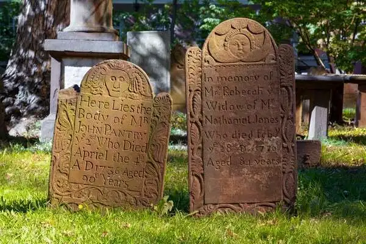

Total Population: Approximately 3.6 million (2023 estimate)
Population Density: About 738 people per square mile
Median Age: 41.0 years
Median Household Income: $79,855
Unemployment Rate: 5.1%
Homeownership Rate: 67.5%
Events
July 2023
Sun
Mon
Tue
Wed
Thu
Fri
Sat

Ancient Cemetery, located in Hartford, Connecticut - Photo Credit: Carol M. HighsmithChapman Falls in East Haddam, Connecticut - Photo Credit: Carol M. HighsmithGlass house in autumn in New Canaan, Connecticut - Photo Credit: Carol M. HighsmithIngall’s Ice Arena in New Haven, Connecticut - Photo Credit: Carol M. HighsmithInterior of the Capitol of Connecticut located in Hartford - Photo Credit: Carol M. HighsmithPumpkin patch near Litchfield, Connecticut - Photo Credit: Carol M. Highsmith